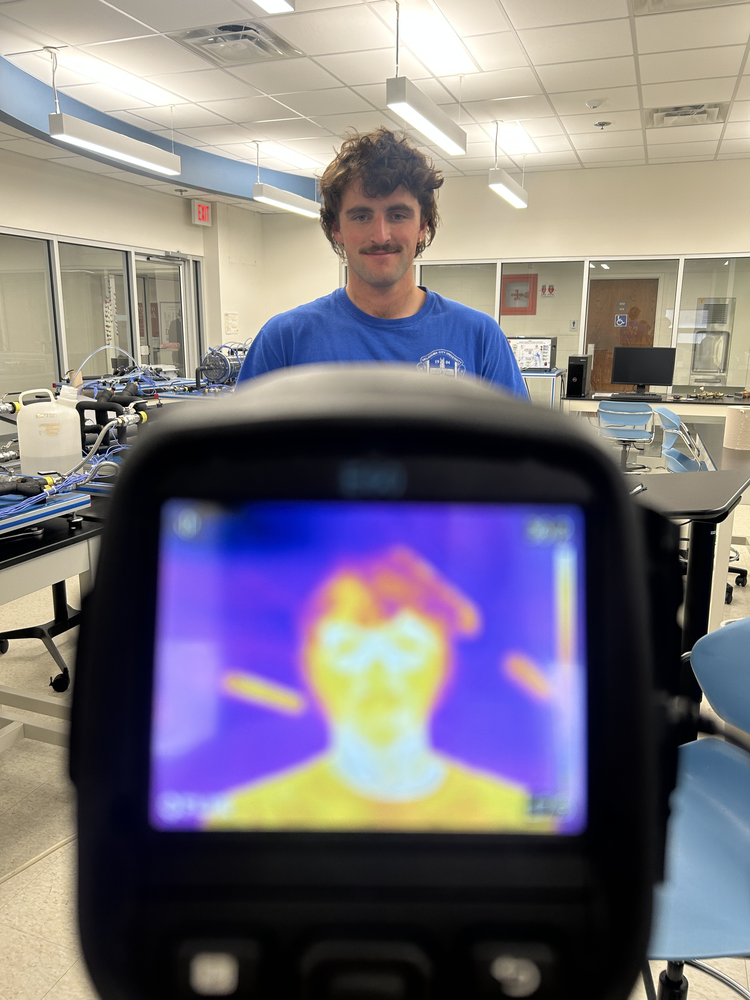

MEMS 3050 was a lab course on the application of fluid mechanics and heat transfer theory to real world applications such as conduction, convection, radiation, heat exchangers, pump performance, pipe flow, lift, boundary layers, turbulence, and experimental design. In this course, I got to run experiments and record experimental data that was turned into formal lab reports. Linked below are the two individual lab reports from the semester. Going in, I thought my favorite lab would be the wind tunnel, but it ended up being very repetitive (measuring across an airfoil). My favorite ended up being the last lab where we made spheres really hot to measure their emissivity.
